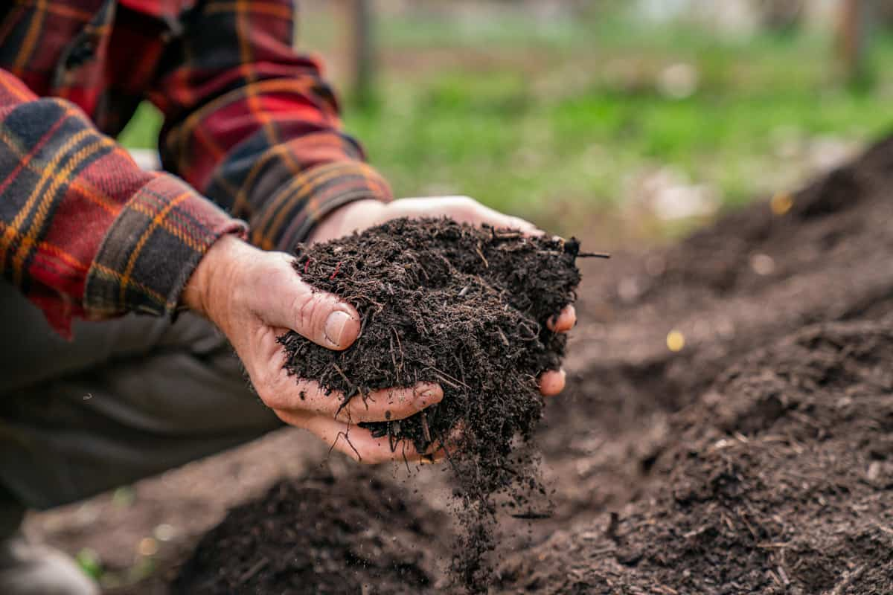
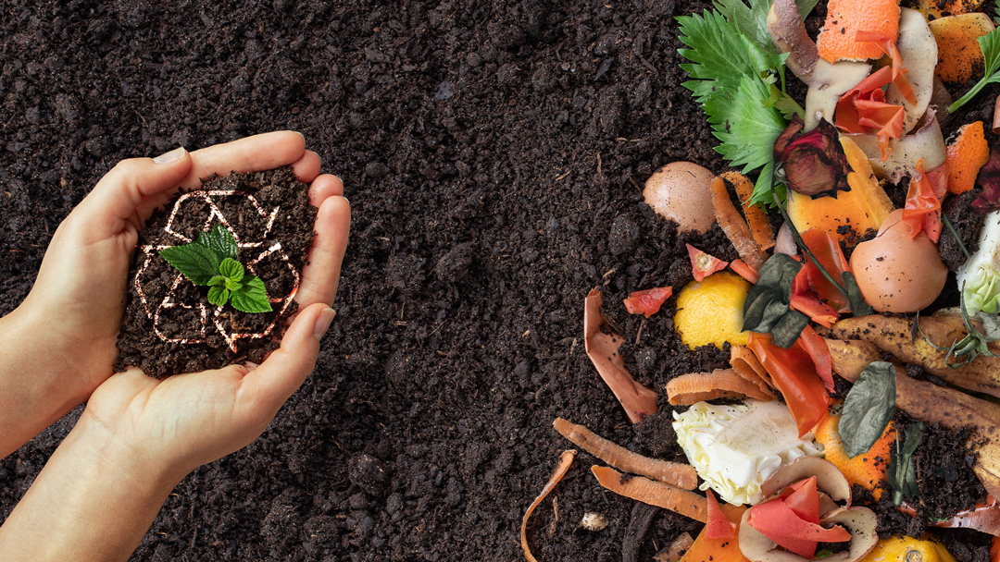

📌 What You'll Learn Here:
- ✅ What is composting & why it matters?
- ✅ Easy step-by-step guides for beginners
- ✅ AI-powered composting assistant (chat with our CompostBot!)
- ✅ Troubleshooting tips to keep your compost healthy
Join us in making a difference—start composting today!

💡 Did You Know?
- The average household wastes 30% of its food—most of which could be composted!
- Composting reduces methane emissions (a greenhouse gas 25x more potent than CO₂).
- You can start composting right now, no matter where you live—backyard, apartment, or office!
🚀 Get Started
Explore our guides below to begin your composting journey!